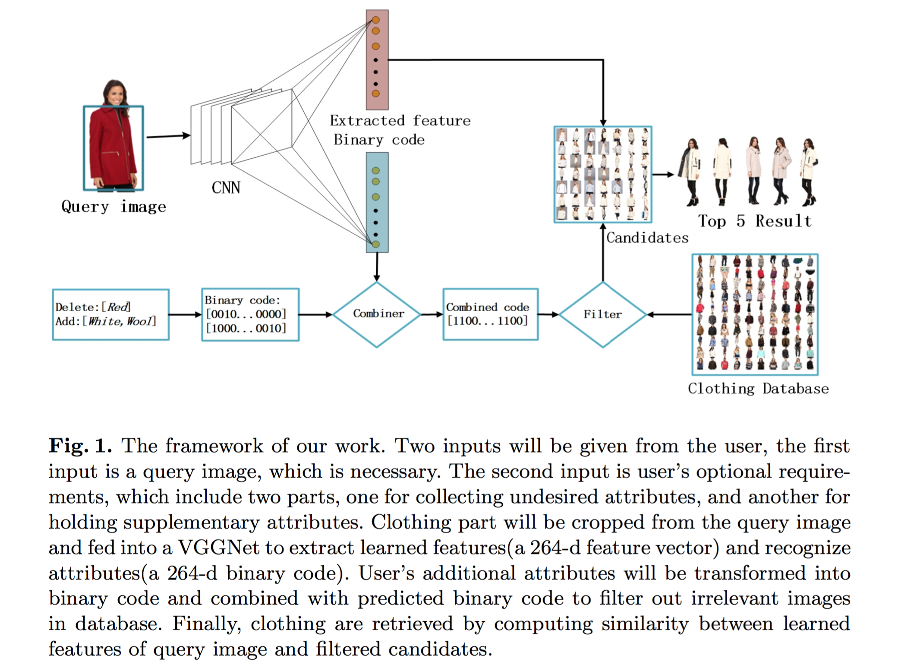

Peng ZhouAssociate Research
Advertising Engine & Data Algorithm Center |
 |
|
Biography
I'm an associate researcher in Advertising Engine & Data Algorithm Center, Online Media Group, Tencent Co. Ltd. Here is my resume.
I received Master degree from Department of Software Engineering, University of Tongji last year, under the supervision of Prof. Yan Liu. I also worked with Prof. WeiXiong Rao I got B.Eng. degree from School of Computer Science and Technology in Nanjing University of technology.
The tutorial of Artificial Intelligence: Imitation Learning on ICML2018 and the Ted video about SpotMini from Boston Dynamics, really interested me and sparked my passion to develop my career in combination of Robotics & AI. Currently, I started to build a robot as the top right shown, and I'm looking for a Ph.d position in that domain.
My research interests include AI and Robotics, Deep Reinforcement Learning, Data Visualization, Text Mining and Complex Network Analysis.
Projects
-
Behavior Cloning Based on End to End Learning (2018.10)
Cloned human driving behavior in a simple car simulator with an end to end approach
1. Collected a dataset including ’middle’ mode and ’ecovery’ mode then balanced the dataset;
2. Done data augmentation by horizontal flip, vertical flip and random shadow;
3. Build network architecture based on the Nvidia’s paper of end to end learning for self-driving car.
Figure1. The network structure of behavior cloning
Figure2. The validation of known track and unseen track

Finally this agent network managed to drive on both known and unseen tracks endlessly. -
Smart Online Large Scale Advertising System (2017.6~2018.1)
Built a smart online large scale advertising system named Walrus to better serve business needs
1. designed multilevel caching strategies based on Presto which can increased the query efficiency by five to ten times;
2. applied a factorization machine based Neural Network, namely DeepFM, to enhance the CTR (Click Through Rate) prediction;
Finally, this model beat all models that we built before such as Logistic Regression, CNN and RNN. -
Topic Modeling on APIs of Source Code Repository (2015.08~2017.3) - graduate thesis
Proposed a hierarchical topic modeling method for open source APIs - AHTM, which contains
a. Topic Mining: analyzed the best parameters of LDA for feature selection on source code.
b. API topic Filtering: employed the relations between topic words to build a WordNet.
c. API topic Organizing: proposed a similarity algorithms to organize the different levels of topics.
Finally discussed the validity of AHTM by using the popular repositories, such as D3.js. -
Criminal Network Analysis Based on Mobile Call Logs (2015.2~2016.8)
1. Suggested an analytical process with interactive strategies to analyse CNs constructed from the communication data, which can be divided into three phases, namely, network construction, metric design, structure observation.
2. Used various visualization layouts to configure the network, reinterpreting different measures from the social network domain to the CN domain, and controlling the community structure level with label supervision strategy.
3. Conducted a proof of concept study using mobile call logs.
Figure3. The DeepFM network structure.
Publications
-
A Proof of Concept Study for Criminal Network Analysis with Interactive Strategies,
Peng Zhou, Yan Liu, Mengjia Zhao and Xin Lou.
International Journal of Software Engineering & Knowledge Engineering (IJSEKE), 2017.
-
Criminal Network Analysis with Interactive Strategies: A Proof of Concept Study using Mobile Call Logs,
Peng Zhou, Yan Liu, Mengjia Zhao and Xin Lou.
International Conference on Software Engineering and Knowledge Engineering (SEKE), 2016.
-
Towards a Systematic Approach to Graph Data Modeling: Scenario-based Design and Experiences,
Mengjia Zhao, Yan Liu, and Peng Zhou.
International Conference on Software Engineering and Knowledge Engineering) (SEKE), 2016.
-
Customizing Clothing Retrieval Based on Semantic Attributes and Learned Features
Huawei Liu, Peng Zhou* and Yudi Tang.
International Conference on Multimedia Modeling (MMM), 2017.
This work was finally rejected due to insufficient funds.
-
Framing a Sustainable Architecture for Data Analytics System: An Exploratory Study,
Jitong Zhao, Yan Liu and Peng Zhou
IEEE Access 2018.
- Journal Reviewer: IJSEKE 2017; Conference Reviewer: SEKE 2016.

* above indicates equal contribution
Honors & Awards
| The First Honor (3 out of candidates of all majors), The Outstanding graduate of Tongji University, 2017. |
| National 2nd Prize (345/19065), China Postgraduate Mathematics Contest in Modeling(CPMCM), 2016. |
| Final (176/5200 teams, world-wide), Alibaba Music Fashion Trend prediction competition, 2016. |
| National 2nd Prize (Top 5% applicant), The Excellent Student of Tongji University, 2016. |
| Excellent Stedent, Microsoft Microduino intelligents: hardware training battalion, 2016. |
| National Scholarship, (0.2% of Nationwide), China National Scholarship, 2016. |
| President, Tongji University Graduate Entrepreneurs Club , 2016. |
| Operation Department President, Tongji University Venture Valley in Jiading Campus, 2016. |
| Member, Global Entrepreneurship Week Campus Center (GCC) Summit, 2016. |
| Teaching assistant, Teaching assistant of Embedded System Design, 2016. |
| Teaching assistant, Teaching assistant of Software Modeling, 2016. |
| Final referee, First Tech Challenge(FTC) "Qualcomm Cup" robots competition, 2015. |
| Software Designer, China Certificate of Computer and Software Technology Proficiency, 2014. |
Certificate
| Coursera Certificate, Data Processing Using Python, NJU, 2016. |
| Coursera Certificate, Pattern Discovery in Data Mining, UIUC, 2015. |
| Coursera Certificate, Cluster Analysis in Data Mining, UIUC, 2015. |
| deepLearning.ai Specialization Neural Networks and Deep Learning |
| deepLearning.ai Specialization Improving Deep Neural Networks: Hyperparameter tuning, Regularization and Optimization |
| deepLearning.ai Specialization Structuring Machine Learning Projects |
| deepLearning.ai Specialization Convolutional Neural Networks |
| deepLearning.ai Specialization Sequence Models |
Miscellany
Hobbies: Folk Guitar, Mountain Climbing, Tennis, Programming.
Last Updated by PengZhou: July 22 2018